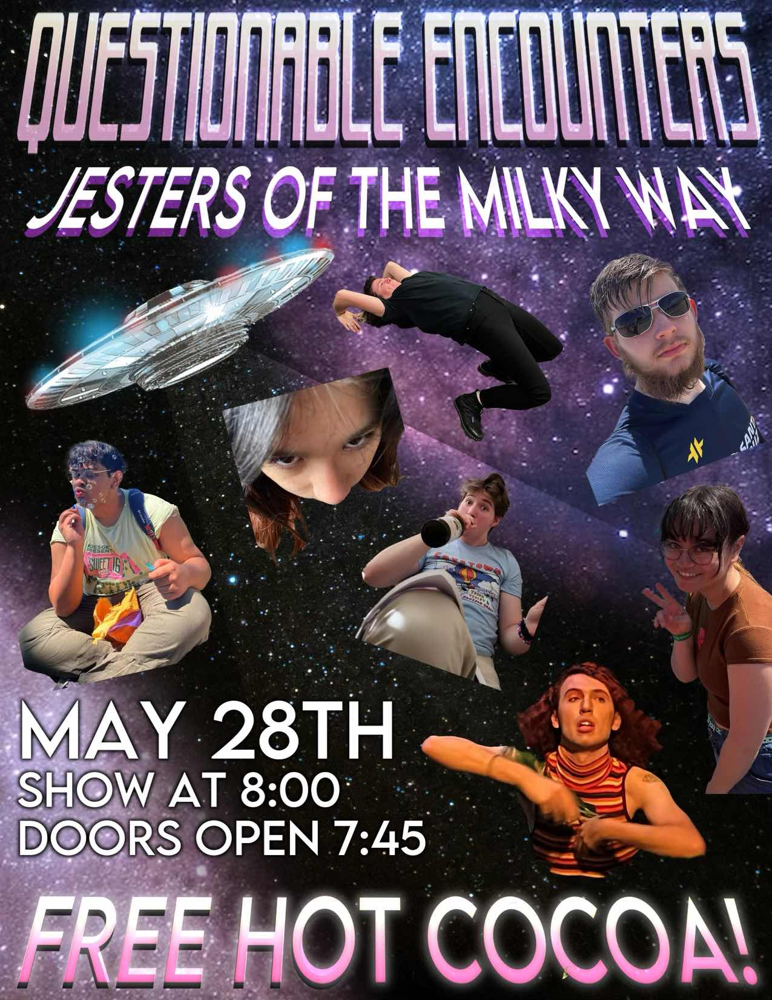
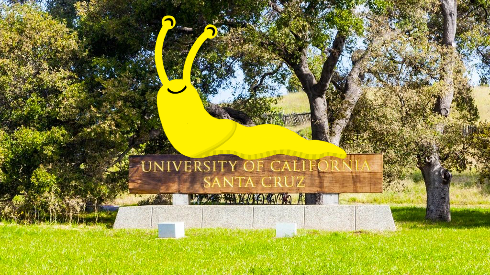

ARTG 80I Night Market

Questionable Encounters Show

UCSC Print Sale 2023
Welcome To MyTrueUCSC. Our website is a vibrant online platform dedicated to fostering connections and keeping you up-to-date with the latest happenings in the UCSC student community. By students, for students, our website's mission is to create a stronger, more united student body. This site is a group effort made by a group of 6 students for ART101 with Wes Modes in the spring of 2023. Navigation in this site is as easy as the click of a button, literally! Links are made easy and accessible by the strip listing "Club Events, Concerts, Parties, Discord, Student Art, Professor Ranks, External Links" below the automatic slideshow. You can also access the latest UCSC Club news through the embedded Twitter section on the homepage.
Here's some club events this week.
Please see the listed concerts that are currently happening:
Please check out the UCSC party's page on Instagram.
You can join our student hub discord by clicking the explore discord server button.

Then look for the student hub tab. Click it and press join hub!

Our next step is to type in your student email address.

Now, you should check your UCSC email for a verification code.

Finally, input your verification code and check out the discord servers available to join!

Please enjoy your selection of servers made by UCSC students!

UCSC is a campus filled with many artists. As a community UCSC hosts many events to share and experience different artistic talents.
Drop in Figure Drawing on Wednesday Nights from 7pm-9pm Located in UCSC Art Department room M-101 Join fellow peers and the public in a space to draw a live model. ANY level of experience is welcome
The UCSC Art Department is hosting an Open Studio event to showcase the wonderful work its students have been working on all quarter. Join us on Friday June 9th from 12pm to 4pm in the Elena Baskin Visual Arts Studios.
Our Art Students have wonderful and creative designs we want to share with our community. Stop by Friday & Saturday June 9 & 10 10am - 6pm located at the UCSC ART DEPARTMENT Room G-101
Here is a discussion regarding professors and potential recommendations UCSC students have.
Here is a link to the Website Rate My Professors for UCSC: Link

UC Santa Cruz is a public university like no other in California, combining the intimacy of a small, liberal arts college with the depth and rigor of a major research university.

Slug Success is a web-based tool used to help staff schedule, coordinate, target, and report on advising and other student success services on the UCSC campus.

MyUCSC is the university's online academic information systems portal and it is used by students to enroll in classes, check grades, view financial aid and billing accounts, and update their personal information.